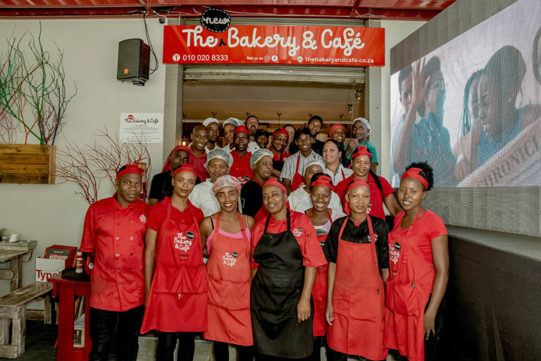

About Us
The Bakery and Cafe is a place where customers become regulars and regulars become friends. We are your home away from home, the place where you'll get more.
To us, baking is an art form, and we take pride in creating tastes that inspire and stir something deep within. Created with only a few pure, high-quality ingredients; mixed and shaped by hand; and baked to perfection- every last crumb has soul.
Service Guarantee
You've spoken, and we've listened. Our customers are the reason we do what we do, and your opinion helps shape our menu and service. The Bakery and Cafe goes to great lengths to ensure that we only use the freshest ingredients, serve beautiful food, and put a smile on every customer's face.
The Cafe
The smell of freshly baked bread, staff that are truly excited to serve you, and food to die for! We’ve spent lots of time creating an authentic cafe that will comfort the senses, and the appetite.
Our features the classics, and a few of our own favourites.
Our Staff

At The Bakery and Cafe, our team is the heart of everything we do. From the early hours of the morning to the last cup of coffee served, we're dedicated to creating a warm, welcoming experience for every guest who walks through our doors.
Our talented bakers begin each day before sunrise, preparing fresh breads, pastries, and cakes using quality ingredients and trusted techniques. Every item is made with care, passion, and attention to detail.
Out front, our friendly staff bring energy and hospitality to the space. Whether they're crafting your favorite coffee or helping you discover something new from our menu, they're always ready to make your visit special.
At The Bakery and Cafe, we believe great food and great service go hand in hand. We're more than just a team, we're a family and we look forward to sharing what we love with you.
Our Locations
| Jet Park | Mountain View | Centurion |
|---|---|---|
Visit our to get in touch with us.